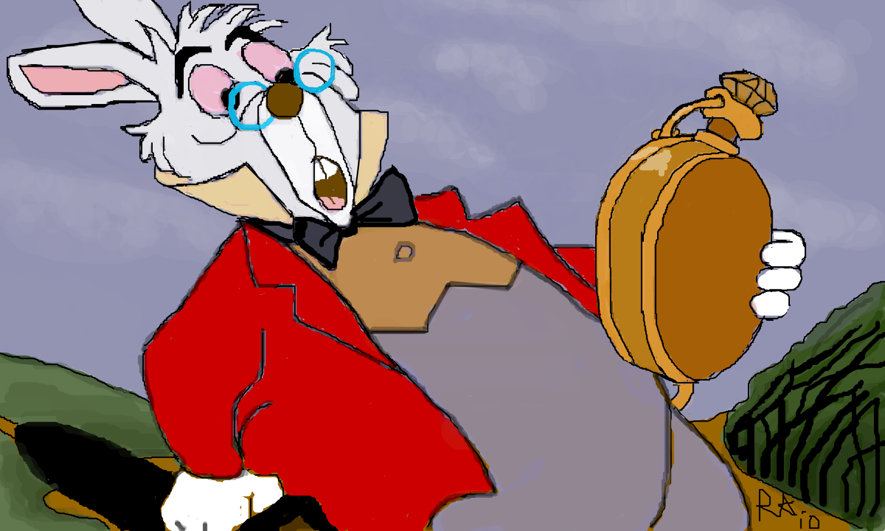

Research suggests that the mañana attitude doesn't mean procrastinators get nothing done, but that they don't get done what they think (and probably rightly so) they should be doing.
For instance, if you are the top heel-dragger in class (no mean distinction in itself), you may end up handing in that term essay three weeks past the deadline, but in the meantime you'll have accomplished the substantial feat of having watched all episodes of all seasons of Breaking Bad back-to-back, which will no doubt earn you kudos among your envious stickler peers.
Besides, it seems that three weeks past the due date is about right for the average procrastinator. As professor of philosophy – and winner of the 2011 Ig Nobel Prize for Literature – John Perry points out: 'For procrastinators, deadlines start to press a week or two after they pass.'
(More...)

Why is fake news much harder to ignore if it comes from a favoured source, such as a favourite website or a friend's Facebook timeline? Here's a clue: we become attached to our preferences and resist ditching them, even to our own cost.
More from the New Scientist
Almost counter-intuitively, confronting head-on with correct information people who cling onto misinformation isn't likely to get us anywhere. Dr Tali Sharot (Experimental Psychology, UCL), explains:
Although artificial neural networks (ANNs) have been inspired and to some extent simulate the neural networks of animals, we still avoid calling intelligent computing systems 'brains' – and with good reason. In fact, the analogy between networks and the human brain, although useful, is potentially misleading: on the one hand, a typical ANN is far simpler than the neural network of the average human brain; on the other hand, it can outperform by far the human brain in very specific tasks.
But do ANNs think and, if so, what are they thinking?
Find out more about artificial networks and machine learning...